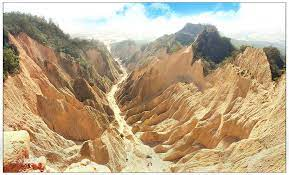
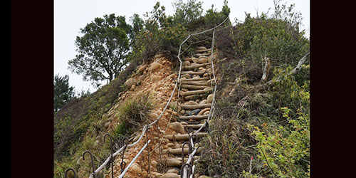

關於本站
歡迎光臨本站。
本站簡單介紹火炎山旅遊景點和相關遊玩資訊。
※未經許可，請勿擅自複製轉載。
火炎山
●火炎山地形⛰️

具有崩塌斷崖地理景觀、原生馬尾松林林相 。
其南側濱臨大安溪，由於風化與雨水的侵蝕作用，切割成許多尖銳山峰的組合。
●火炎山步道👣

步道長度：約 6.4 公里，O型環狀進出，來回大約三小時。
步道難度：★★★★
站主介紹
- 暱稱 ：
- Arno
- 職業 ：
- 米蟲
- mail ：
- eaoleen@gmail.com
- Web ：
- https://zh.wikipedia.org/zh-hant/火炎山_(苗栗縣)